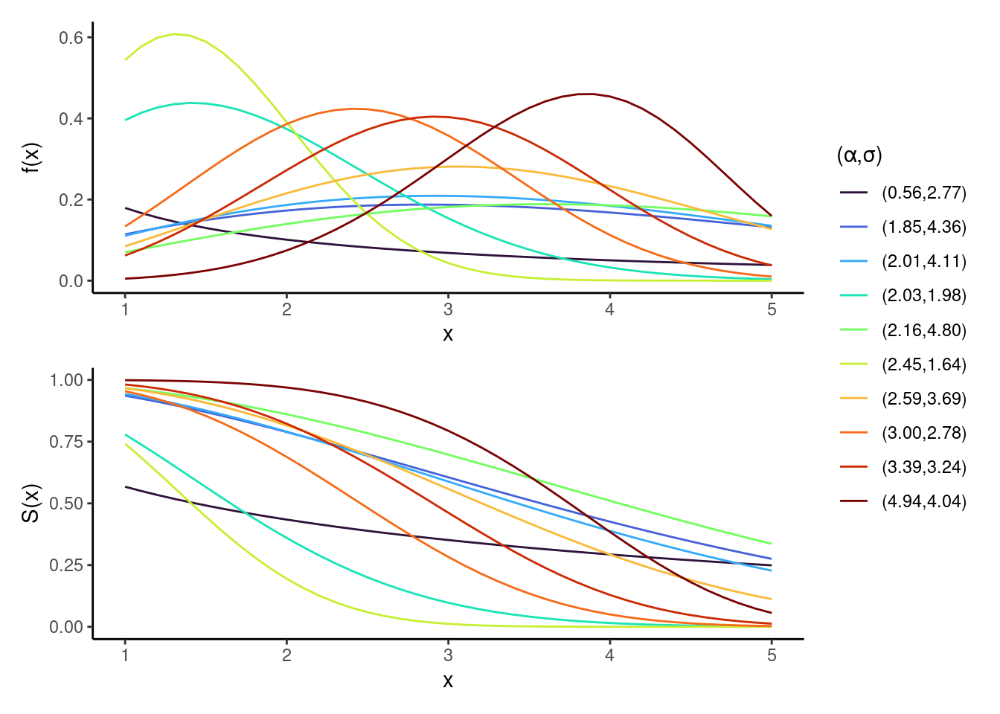

High variability for generated survival and censoring distributions
To illustrate the diversity of the Weibull distributions used in our simulation design, we plot both the density f(t) and survival S(t) functions for 10 randomly sampled shape \alpha and scale \sigma parameter pairs. These distributions represent either the true survival, predicted survival, or censoring times across simulations. The wide parameter range induces substantial variability, ensuring a rich family of distributions and increasing the sensitivity of our evaluation to detect violations of properness. By construction, all data-generating mechanisms assume Y independent of C, satisfying the random censoring assumption.
Code
library(ggplot2)library(patchwork)library(dplyr)set.seed(20250408)shape =runif(10, 0.5, 5)scale =runif(10, 0.5, 5)dw =mapply(function(shape,scale) dweibull(seq.int(1,5,0.1), shape,scale),shape,scale) |> reshape2::melt() |>mutate(x =rep(seq.int(1,5,0.1), 10),group =rep(sprintf("(%.2f,%.2f)",shape,scale), each =41)) |>select(x, group, value)pw =mapply(function(shape,scale) pweibull(seq.int(1,5,0.1), shape,scale, lower.tail=F),shape,scale) |> reshape2::melt() |>mutate(x =rep(seq.int(1,5,0.1), 10),group =rep(sprintf("(%.2f,%.2f)",shape,scale), each =41)) |>select(x, group, value)(ggplot(dw, aes(x = x, y = value, group = group, color = group)) +ylab("f(x)")) /(ggplot(pw, aes(x = x, y = value, group = group, color = group)) +ylab("S(x)")) +plot_layout(guides='collect') &geom_line() &theme_classic() &guides(color =guide_legend(title='(α,σ)')) &scale_color_viridis_d(option ="turbo")

Weibull density (top) and survival (bottom) curves for randomly generated shape, α, and scale, σ parameters. Each curve corresponds to a different parameter pair, illustrating the broad variability across simulated distributions.
This section supports the “Simulation Experiments” section of the paper.
Use properness_test.R to run the experiments. To run for different sample sizes n, use run_tests.sh. Merged simulation results for all n are available here.
Each row corresponds to one simulation, using m = 1000 draws from Weibull survival distributions at a fixed sample size n \in {10, \dots, 1000}.
The output columns are:
sim: simulation index (k in the paper)
n: sample size
{surv|pred|cens|}_{scale|shape} the scale and shape of the Weibull distributions for true, predicted and censoring times respectively
prop_cens: proportion of censoring in each simulation
tv_dist: the total variation distance between the true and the predicted Weibull distribution (closer to 0 means more similar distributions)
{score}_diff, {score}_sd: the mean and standard deviation of the score difference \delta between true and predicted distributions across draws
Scoring rules analyzed:
The SBS at the 10th, 50th and 90th percentiles of observed times
The ISBS, using 50 equidistant points between the 5th and 80th percentile of observed times
The RCLL and its re-weighted rRCLL (RCLL* in the paper)
We compute 95% confidence intervals (CIs) for the mean score difference \delta using a t-distribution. A violation is marked statistically significant if:
The mean score difference exceeds a threshold: \delta > 0.001
The CI excludes zero (i.e., \text{CI}_\text{lower} > 0)
For example, the violation results for the first simulation and n = 250 across all scoring rules are:
Code
data |>filter(sim ==1, n ==250) |> DT::datatable(rownames =FALSE, options =list(searching =FALSE)) |>formatRound(columns =4:7, digits =5)
We summarize violations across simulations, by computing for each score & sample size:
Number of significant violations
Violation rate
Average score difference (with 95% CI) among simulations where violations occurred
Code
all_stats = data |>group_by(n, metric) |>summarize(#total = n(),n_violations =sum(signif_violation),violation_rate =mean(signif_violation),diff_mean =mean(diff[signif_violation]),diff_sd =sd(diff[signif_violation]),.groups ="drop" )# 95% t-critical value based on average violation countget_violation_ci =function(mean, sd, n_viol) {if (n_viol <=1) return(NA) se = sd /sqrt(n_viol) tcrit =qt(0.975, df = n_viol -1) diff_CI_lower = mean - tcrit * se diff_CI_upper = mean + tcrit * setibble(diff_CI_lower, diff_CI_upper)}all_stats = all_stats |>rowwise() |>mutate(get_violation_ci(diff_mean, diff_sd, n_violations)) |>select(!diff_sd) |>ungroup()all_stats |>arrange(metric) |> DT::datatable(rownames =FALSE, options =list(searching =FALSE)) |>formatRound(columns =4:7, digits =5)
Summary
RCLL and RCLL* show no violations across any simulation or sample size.
SBS shows time- and sample-size-dependent violations, mostly at smaller n, especially for early evaluation times (\tau = q_{0.1}). All differences are small (typically < 0.01).
ISBS showed minor violations only at n = 10; none for n > 50.
Table D2
Note
The only difference with the previous experiment is that S_C(t) is now being estimated using the marginal Kaplan-Meier model via survival::survfit() instead of using the true Weibull censoring distribution (see helper.R). For SBS/ISBS we use constant interpolation of the censoring survival distribution S_C(t). For RCLL* we use linear interpolation of S_C(t) to mitigate density estimation issues, i.e. for f_C(t).
Use properness_test.R to run the experiments. To run for different sample sizes n, use run_tests.sh, changing estimate_cens to TRUE. Merged simulation results for all n are available here.
Load results (same output columns as in the previous section):
Code
res =readRDS("results/res_sims10000_distrs1000_1.rds") |>select(!matches("shape|scale|prop_cens|tv_dist")) # remove columns
As before, we compute 95% confidence intervals for the score differences across m = 1000 draws per simulation:
Lastly, we summarize the significant violations across sample sizes and scoring rules:
Code
all_stats = data |>group_by(n, metric) |>summarize(#total = n(),n_violations =sum(signif_violation),violation_rate =mean(signif_violation),diff_mean =mean(diff[signif_violation]),diff_sd =sd(diff[signif_violation]),.groups ="drop" )# 95% t-critical value based on average violation countget_violation_ci =function(mean, sd, n_viol) {if (n_viol <=1) return(NA) se = sd /sqrt(n_viol) tcrit =qt(0.975, df = n_viol -1) diff_CI_lower = mean - tcrit * se diff_CI_upper = mean + tcrit * setibble(diff_CI_lower, diff_CI_upper)}all_stats = all_stats |>rowwise() |>mutate(get_violation_ci(diff_mean, diff_sd, n_violations)) |>select(!diff_sd) |>ungroup()all_stats |>arrange(metric) |> DT::datatable(rownames =FALSE, options =list(searching =FALSE)) |>formatRound(columns =4:7, digits =5)
Summary
Estimating S_C(t) via Kaplan-Meier produced nearly identical results to using the true distribution, with no violations for RCLL/RCLL* and only small-sample effects for SBS and ISBS.
Degenerate Model Exploits ISBS Scoring Rule
Note
This section demonstrates how a deliberately simple, uninformative survival model—the degenerate model—can outperform established methods under the Integrated Survival Brier Score (ISBS). The model entirely ignores covariates and instead outputs a flat survival function that drops from 1 to 0 at a fixed quantile of observed times.
This model is deliberately constructed to expose a key weakness in ISBS: it can be minimized by predictions that offer no individualization or clinical utility. This reinforces our theoretical findings that ISBS is not a proper scoring rule.
Below, we define the degenerate model in mlr3proba, tune it over the quantile cutoff with ISBS, and compare its ISBS score and other evaluation measures to Cox, Kaplan-Meier, and Random Survival Forest (RSF) learners on the survival::rats dataset.
LearnerSurvDegenerate =R6Class("LearnerSurvDegenerate",inherit = LearnerSurv,public =list(initialize =function() { super$initialize(id ="surv.degenerate",predict_types =c("distr"),feature_types =c("logical", "integer", "numeric", "character", "factor", "ordered"),properties ="missings",packages =c("survival", "distr6"),label ="Degenerate Estimator",param_set =ps(quantile =p_dbl(0, 1) ) ) } ),private =list(.train =function(task) {list(time = task$truth()[,1L]) # store observed times },.predict =function(task) { quantile_ps = self$param_set$values$quantile times =sort(unique(self$model$time)) surv =matrix(nrow = task$nrow, ncol =length(times)) q_t =quantile(seq.int(length(times)), quantile_ps)[[1]]# same S for all test observations, sharp drop from 1 to 0 at q_t surv[, 1:floor(q_t)] =1 surv[, ceiling(q_t):ncol(surv)] =0colnames(surv) = times.surv_return(times = times, surv = surv) } ))
We tune the degenerate model to find the optimal quantile to switch the prediction at:
Code
l = LearnerSurvDegenerate$new()l$param_set$values$quantile =to_tune(0, 1)# ISBSm =msr("surv.graf")# Tune the quantile parameter of the degenerate modelat =auto_tuner(tuner =tnr("grid_search", resolution =20),learner = l,resampling =rsmp("holdout"),measure = m,)
In our benchmark experiment we compare to the Cox PH, Random Forest, and Kaplan-Meier using 3-fold outer cross-validation.
Code
# Seed for reproducibilityset.seed(20250418)# Compare to Cox PH and Kaplan-Meierlearners =c(lrns(c("surv.coxph", "surv.kaplan", "surv.rfsrc")), at)r =rsmp("cv", folds =3)bm =benchmark(benchmark_grid(tasks =tsk("rats"), learners = learners, resamplings = r))
To evaluate the benchmark we use Harrell’s C, D-calibration, RCLL, the SBS evaluated at the median observed time, and the ISBS:
Code
q50 =quantile(tsk("rats")$times(), 0.50)measures =c(msrs(c("surv.cindex", "surv.dcalib", "surv.rcll")),msr("surv.graf", integrated =FALSE, times = q50, id ="SBS_q0.5"),msr("surv.graf", id ="ISBS"))
We assess the performance of several survival scoring rules (RCLL, RCLL*, ISBS, D-calibration, Harrell’s C-index) on real-world survival datasets using the mlr3proba framework, tested with 10 repetitions of 5-fold cross-validation on the following learners:
Kaplan-Meier (non-parametric)
Cox proportional hazards model
Random survival forests (RSF)
Code
# (normal) RCLLrcll =msr("surv.rrcll", id ="RCLL", proper =FALSE)# (re-weighted) rRCLL/RCLL*rrcll =msr("surv.rrcll", id ="RRCLL", proper =TRUE)# get all survival tasks in mlr3probakeys =as.data.table(mlr_tasks)[task_type =="surv"][["key"]]tasks =lapply(keys, function(key) {tsk(key)})set.seed(42)bm_grid =benchmark_grid(tasks = tasks,learners =lrns(c("surv.kaplan", "surv.ranger", "surv.coxph")),resamplings =rsmp("repeated_cv", folds =5))bm =benchmark(bm_grid)res = bm$aggregate(measures =c(rcll, rrcll, msr("surv.cindex"), msr("surv.dcalib"), msr("surv.graf")))
Below we show the aggregated performance metrics across all tasks and learners:
Our experiment demonstrates substantial divergences in model assessment depending on the chosen metric. Although RCLL* is the only proper scoring rule in a theoretical sense, its practical behavior differs meaningfully from other commonly used metrics.
For instance, on datasets such as veteran and whas, which exhibit non-proportional hazards, RSF is more suitable to model non-linear effects compared to the CoxPH. In these cases, RCLL* identifies RSF as superior, whereas RCLL and ISBS still prefer CoxPH — suggesting potential practical limitations of the latter metrics in such settings.
Additionally, RCLL* appears to better capture both discrimination and calibration. In the gbcs dataset, CoxPH achieves the best RCLL, ISBS and C-index scores, yet shows extremely poor calibration (\text{D-calib} \approx 15.7), while RCLL* ranks Kaplan-Meier as the best — possibly reflecting better-calibrated risk estimates. This discrepancy becomes even more pronounced in the lung dataset, where CoxPH again yields high RCLL/C-index/ISBS performance despite severe calibration failure (\text{D-calib} \approx 23.5), whereas RCLL* selects RSF instead.
These findings highlight a critical need for further research: not all metrics labeled as “proper” in theory behave equally in practice.